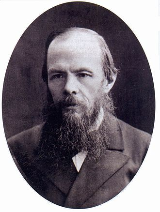
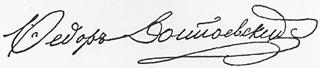

|  Dostojevski 1879. |
| Rodjenje: 11. Novembar 1821 Moskva, Rusija |
| Smrt: 9. februar 1881. Sankt Peterburg, Rusija |
| Knjizevni period: realizam |
| Supruga: Marija Dmitrijevna Isajeva |
| Vazna djela |
| Potpis: |
Fjodor Dostojevski je rođen u porodici koja je pripadala nižem plemstvu.
Budući da su mu roditelji bili imućni, plaćali su dadilju da se brine o njemu. Fiktivni likovi u djelima ovog pisca vuku korijene iz mnogih herojskih priča i bajki koje mu je dadilja čitala. Majka ga je učila da čita i piše kada je napunio četiri godine, a kao pomoćno sredstvo u učenju koristila je Bibliju. U tinejdžerskim godinama bio je izložen ozbiljnijoj literaturi, kao što su na primjer djela Puškina (Aleksandar Sergejevič Puškin), Getea (Johan Volfgang Gete) i Homera (Homer).
Na njegovoj sahrani bilo je prisutno oko 100 000 ljudi. Na nadgrobnom spomeniku Fjodora Dostojevskog piše epigraf njegovog romana „Braća Karamazovi“, a izvorno rečenica iz Jevanđelja po Jovanu: „Zaista, zaista vam kažem, ako zrno pšenično, padnuvši na zemlju, ne umre, onda jedno ostane; ako li umre, mnogo roda rodi“.
Dostojevski stoji na samom vrhu svjetskih pisaca zajedno sa Šekspirom, Tolstojem, Prustom (Marcel Proust), Servantesom, Danteom (Dante Alighieri) i još par vrhovnih pisaca. Ogroman je njegov uticaj na smjer svjetske književnosti i brojne pisce, kao što su: Herman Hese (Hermann Hesse), Kafka (Franz Kafka), Marsel Prust i mnoge druge. Posebno je doprinijeo razvoju egzistencijalizma i ekspresionizma u književnosti. Muzej Fjodora Dostojevskog se nalazi u mjestu Vijtivci u kome se naglasak stavlja na njegovu povezanost sa Ukrajinom.